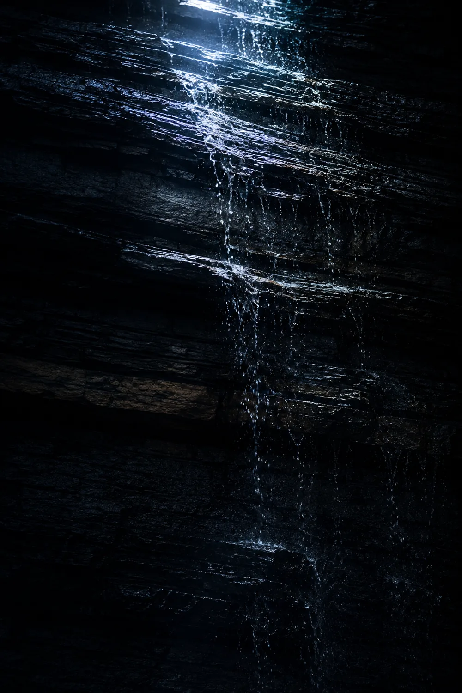

About
水源と科学について
水は、いちばん近い
化粧品である。
化粧水の成分表示を見ると、いちばんはじめに「水」と書かれています。 配合量が多い順に並ぶ決まりですから、化粧水の大半は水だということになります。 それなのに、水そのものについて語られることはほとんどありません。 私たちは、そこに引っかかりを覚えたところから始めました。

The Source
長い時間が、
水を仕上げていく。
雨として地表に落ちた水は、砂と礫と岩の層をゆっくりと降りてゆきます。 その過程で余分なものを置いていき、かわりに土地の成分をわずかずつ受け取る。 私たちが汲み上げている水は、そうして数十年をかけて仕上がったものです。
分析にかけると、この水には142種の微量ミネラルが含まれていることが分かりました。 ひとつひとつの量はごくわずかですが、その組み合わせは人の手で再現できるものではありません。 地層という装置が、時間をかけて配合した結果だからです。
142種
一滴に含まれる微量ミネラル（自社分析／(仮)）
1,200m
水を汲み上げる地層の深度（(仮)）
18年
水源の成分研究にかけた歳月（(仮)）
Science
水の力を引き出すための、4つの技術。
01
層を壊さずに汲み上げる
地層が長い時間をかけて整えた成分の並びは、勢いよく汲み上げると崩れてしまいます。水圧をかけずゆっくりと引き上げる独自の採水法により、水が持っていた状態のまま容器に納めます。1日に汲み上げる量には上限を設けています。
02
熱を加えない精製
加熱による殺菌は効率的ですが、微量ミネラルの一部を変質させます。SUIGEN は常温下での多段ろ過を選びました。時間もコストもかかる方法ですが、水が本来持っていた成分をそのまま残せます。
03
角層へ届ける粒子設計
水は、ただ肌にのせただけでは留まりません。粒子の大きさと並びを整えることで、角層のすみずみまで行き渡り、そこで留まる設計にしています。とろみを足さずに保湿感を出せるのは、この設計によるものです。
04
余計なものを足さない
水の働きを確かめるため、配合はできる限り絞りました。着色料・合成香料・パラベン・鉱物油は使用していません。水と、水を届けるための成分だけで構成しています。
水を選ぶまでに、10年かかりました
全国の水源を訪ね、成分を分析し、実際に肌にのせて確かめる。その繰り返しでした。ミネラルが豊富であることと、化粧品に向いていることは必ずしも一致しません。含有量が多すぎると、かえって肌の上で結晶化してざらつきの原因になります。
私たちが最終的に選んだのは、突出した数値を持つ水ではありませんでした。むしろ、どの成分も突出していない水です。142種がそれぞれ少量ずつ、偏りなく含まれている。その均衡が、肌にのせたときのなじみの良さにつながっていました。
季節によって、水は変わります
同じ水源から汲み上げていても、雨量や気温によって微量成分の構成はわずかに動きます。梅雨のあとは全体にやわらかく、冬場は少し引き締まる。長く記録を取っていると、そうした傾向が見えてきます。
この揺らぎをなくすことはできません。できるのは、把握しておくことだけです。採水地に併設した研究施設では、週に一度、成分の記録を続けています。製品の品質を一定に保つための、いちばん地味で欠かせない仕事です。
その一滴に、
142種の微量ミネラル。
WATER & SCIENCE